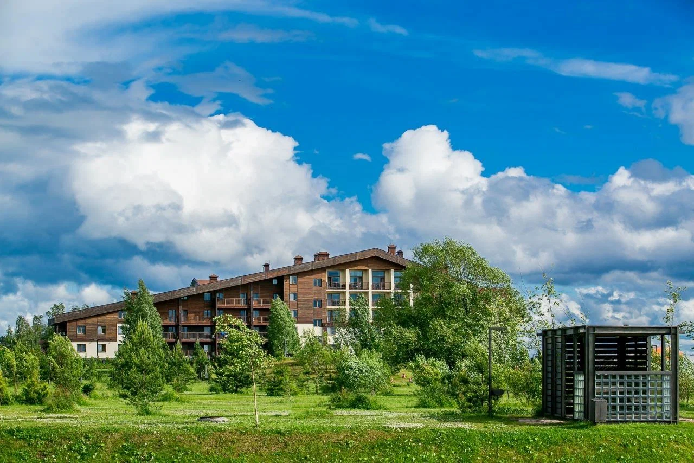
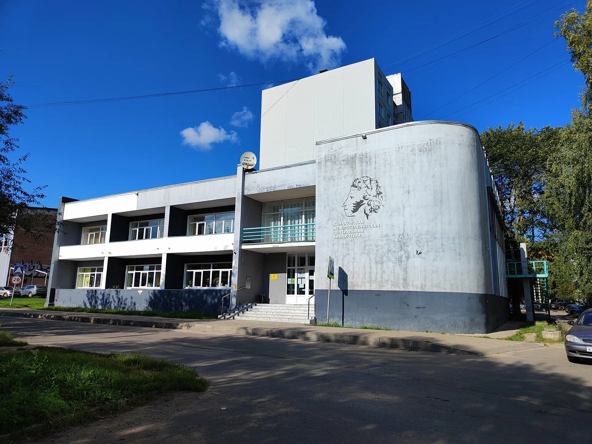
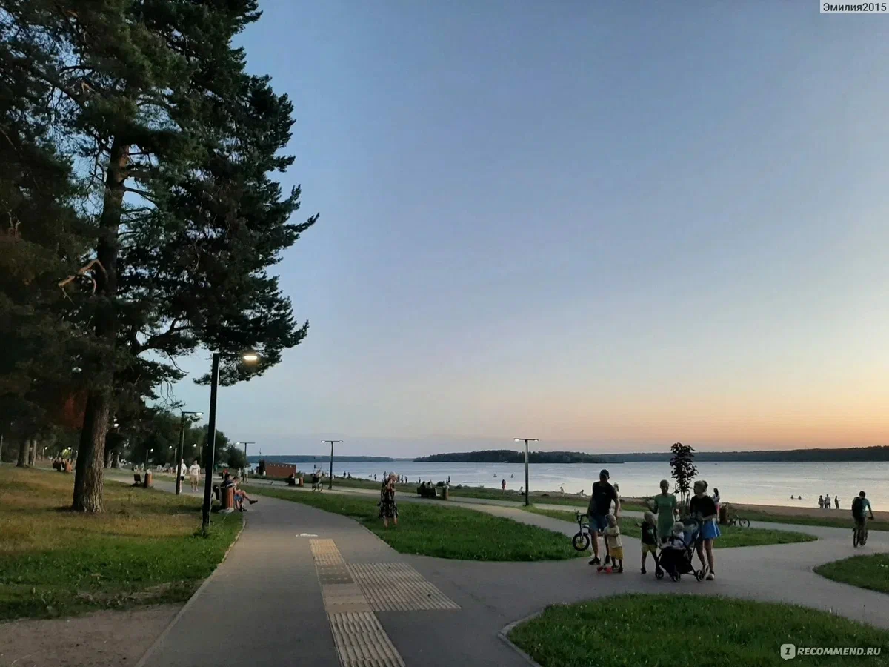
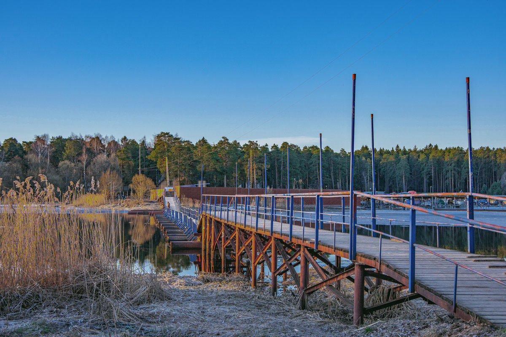
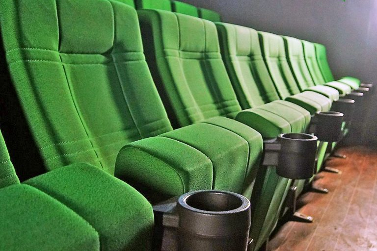
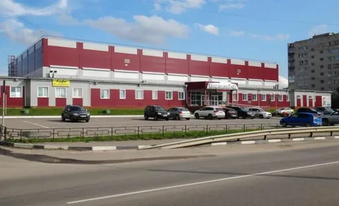

Заборье, Глинники и селищ характеризуют культуру населения края в древнерусское время. Орудия труда, бытовые вещи, украшения из железа, бронзы и стекла, кости позволяют не только рассказать о занятиях населения, реконструировать мужской и женский костюмы, но и частично восстановить элементы духовной жизни, прежде всего погребальный обряд.
ПодробнееCтарейший в Раменском городском округе, построен в 1929 году. Назван в честь публициста, литературного критика, одного из первых советских дипломатов Вацлава Вацлавовича Воровского.
Подробнее

В Дворце культуры «Современник» проводятся различные мероприятия: концерты, спектакли, выставки, работают кружки и секции для детей и взрослых. Также в здании есть кинотеатр с двумя залами.
Подробнеебаза отдыха на берегу Волги в городе Конаково Тверской области. Расположен на благоустроенной территории площадью 200 га.
Подробнее

Конаковская централизованная библиотечная система была образована в 1980 году. В 2021 году стала победительницей конкурсного отбора на создание в 2022 году модельных муниципальных библиотек в рамках федерального проекта «Культурная среда» национального проекта «Культура». 27 декабря 2022 года состоялось ее торжественное открытие. В феврале 2025 года произошло переименование — теперь это Конаковская центральная библиотека.
ПодробнееНабережная Волги в Конаково. В 2020 году проект благоустройства набережной выиграл крупный грант, на ней появились лавочки, система освещения, асфальтированные дорожки, спортивные снаряды, детский городок, волейбольная площадка.
Подробнее

Понтонный пешеходный мост через реку Донховка в городе Конаково. Он соединяет набережную Волги и сосновый бор.
ПодробнееДвухзальный кинотеатр одноимённой киносети, работающий в городе Конаково Тверской области. Заработал в августе 2024 года во Дворце культуры «Современник».
Подробнее

Предприятие в Тверской области, филиал Всероссийского научно-исследовательского института пресноводного рыбного хозяйства (ВНИИПРХ)
ПодробнееНазвание завода связано с именем Николая Васильевича Верещагина — старшего брата знаменитого живописца Василия Верещагина. Верещагин считается основателем российского сыроварения: в 1866 году он открыл в Тверской губернии первую сыродельную артель и школу сыроварения.
Подробнее

В большом выставочном зале комплекса можно узнать об истории города Конаково, города Корчева и самого ЗСК.
ПодробнееВсесезонный ледовый комплекс в городе Конаково Тверской области. Предназначен для зимних видов спорта: хоккея, фигурного катания и массового катания на коньках.
Подробнее